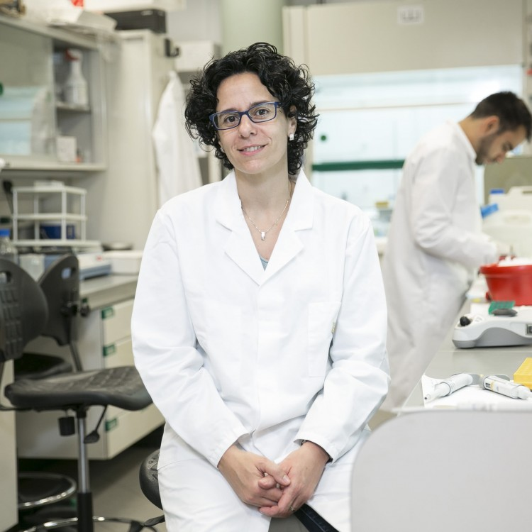

Científiques Catalanes
Biografía i Obra Núria López-Bigas
Biografia
Núria López-Bigas (Monistrol de Montserrat, 1975) és una biòloga catalana especialitzada en la genòmica computacional del càncer.
És professora ICREA a la Universitat Pompeu Fabra (UPF), on ha estat cap del grup de recerca en genòmica biomèdica del Departament de Ciències Experimentals i de la Salut (DCEXS-UPF), al Parc de Recerca Biomèdica de Barcelona (PRBB), durant més de 10 anys. Actualment dirigeix el seu grup a l'Institut de Recerca Biomèdica (IRB).
La seva recerca se centra en el desenvolupament d'eines computacionals que ajudin a la identificació de mutacions causants de tumors. Ha participat en diversos projectes internacionals, com la Xarxa de Recerca de l'Atles Genòmic del Càncer (The Cancer Genome Atlas Research Network). Algunes de les aportacions del seu grup han estat el descobriment de per què en alguns tipus de tumor, s'acumulen mutacions en llocs especifics del genoma, o la descripció de les mutacions de més de 4.000 tumors originats a 13 òrgans diferents. López-Bigas va rebre una beca Consolidator del Consell Europeu de Recerca (ERC per les sigles angleses) el 2015 pel seu projecte “NONCODRIVERS” que té com a objectiu identificar mutacions implicades en el desenvolupament tumoral a les regions no-codificants dels genoma. També va rebre el premi Fundació Banc Sabadell el maig de 2016.

Obra
El seu laboratori centra la seva investigació en la identificació de mutacions causants del desarrollament tumoral, en l’estudi dels processos mutacionals que fan que les cèl·lules del nostre cos, i en particular les cèl·lules tumorals, acumulen milers de mutacións en el seu genoma. La seva estrategia per a abordar aquestes qüestions consisteix en analitzar aquestes mutacions en milers dee tumors amb mètodes de genètica computacional. Un dels seus descobriments més importants és el desarrollament de mètodes bioinformàtics pioners per a identificar els gens causants del càncer i le creaciò de IntOGen i CancerGenomeInterpreter que són plataformes bioinformàtiques per a anàlisi de mutacions somàtiques en tumors. Un dels seus ultims treballs es centra en les mutacions causades per els tractaments antitumorals, la quimioteràpia y la radioteràpia. Ha analitzat el genoma de més de 3500 tumors metàstics de pacients que previament van rebre tractament contra el càncer. Van identificar per cada un dels tractaments més comuns un patró concret en les mutacions de les cèl·lules dels pacients tractats, una “petjada mutacional” de les teràpies. Es tracta d’un primer pas per a comprendre els efectes secundàris a llarg plaç i optimitzar els tractaments contra el càncer.